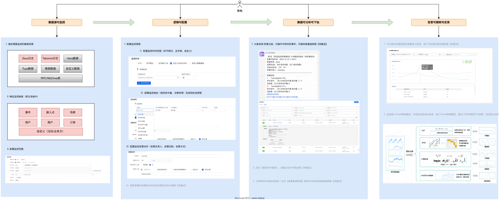
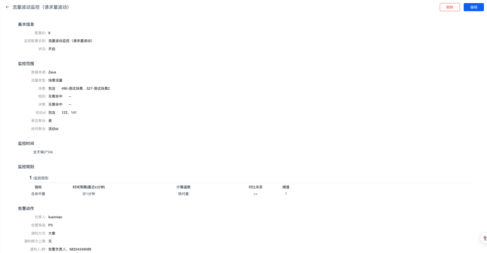
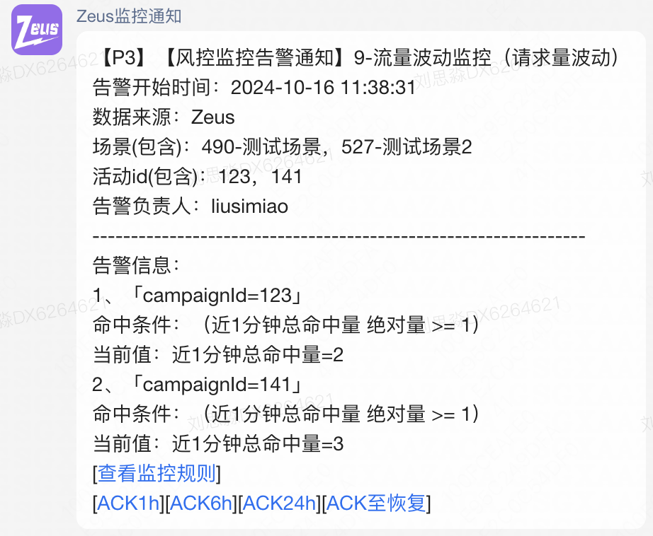
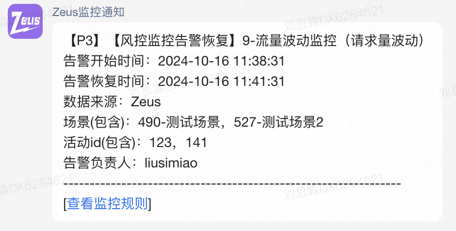
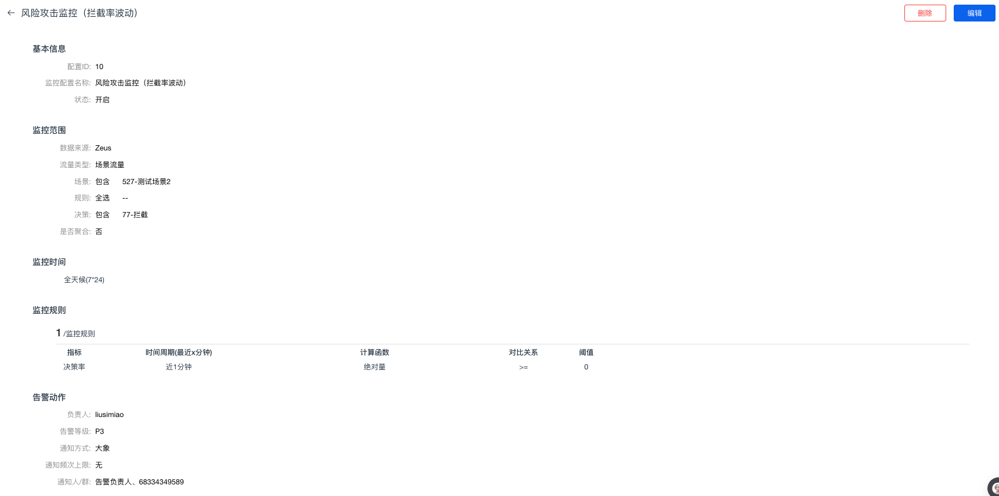
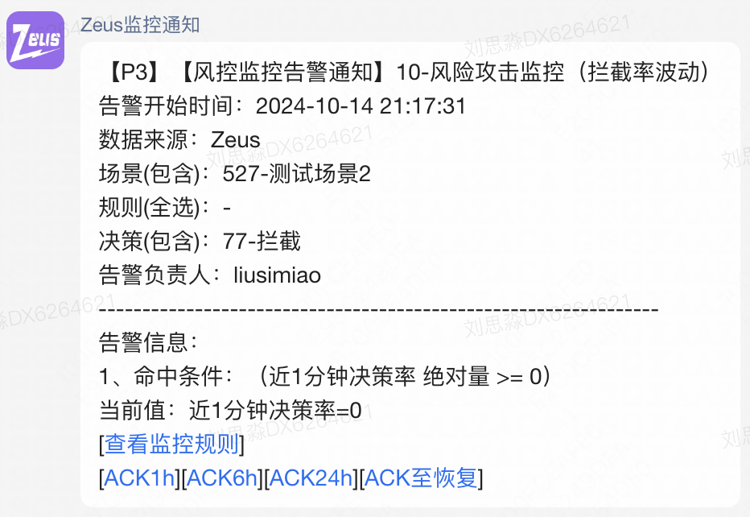
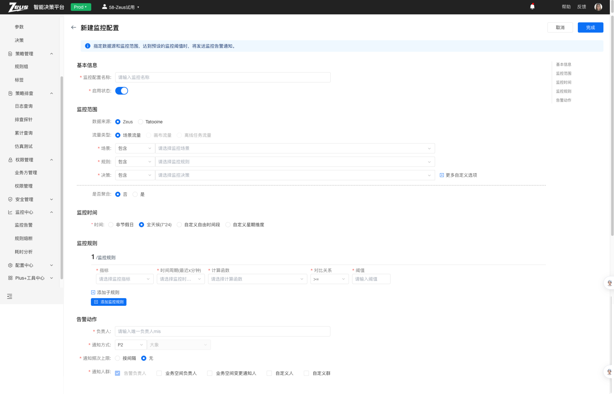
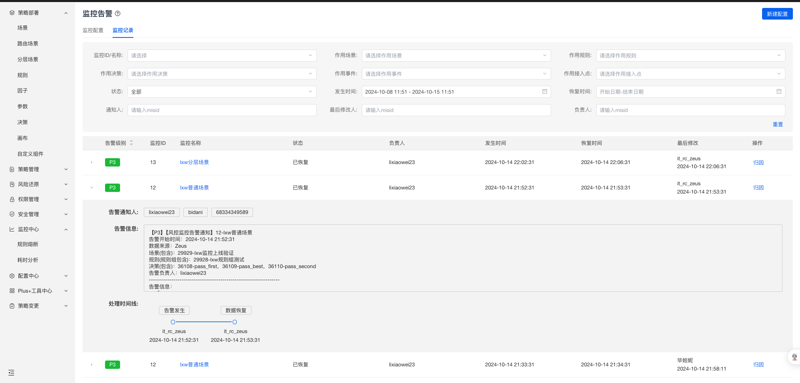
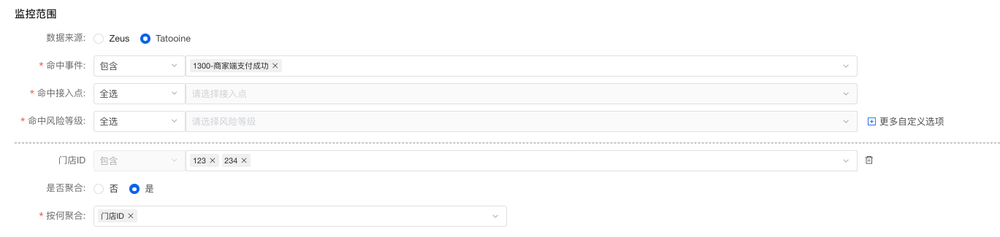

说明：监控告警
- 平台功能链接地址：https://zeus.sankuai.com/data_zeus_static/#/monitorAlertList
- 目前功能开放空间：1，3，4，5，6，152，181，184，198
新空间监控功能使用申请或使用疑问请联系产品：@刘思淼 技术：@崔垚
一、监控定位与概述
支持自定义监控数据源，当监控流量指标波动产生异常达到预设阈值时将发出异常告警并支持生成风险事件等操作以此规避风险。
- 服务范围：信安风控策略/算法
- 监控范围：Tatooine、Zeus实近离、Hera（置灰待建设）等风控系统流量
- 能力支持：监控数据来源自定义、监控逻辑配置、监控消息告出等能力
监控和熔断是什么关系
- 相同点：监控功能在底层执行上趋同于熔断能力，可对于指定数据源某一指标波动情况进行监控，判断对应指标波动是否达到预设的异常阈值。
- 区别：监控和熔断的功能定位和应用范围不同。熔断可对于异常的场景配置进行转非生效的操作，而监控仅可对于异常情况进行告出。因此天然熔断的应用范围远小于监控，仅限于对于Zeus平台上某一生效策略进行熔断，而对于非生效策略或非Zeus平台数据无法进行操作。监控可对于Zeus、Hera、Tatooine、自定义hive表数据源等Zeus上下游系统及非系统操作数据进行监控。
二、快速入门
我们监控的实质上是日志表中的 Zeus请求。
比如携带了某些信息的请求（例campaignId=123的请求）、或者命中了规则/决策的请求（即计算该规则结果为true的请求）、又或者是命中了某场景/事件的请求（即进入该场景/事件的请求量，符合进入该场景/事件条件的请求）
2.1 宣讲视频
2.2 快速入门

2.3 高频监控场景
场景A--流量波动监控（请求量波动）
- 监控诉求解析：对某个事件/活动/场景的请求量进行监控，即监控 命中该事件/活动/场景的请求量
|
说明 |
示意图 |
||||||||||||||||||||||
|---|---|---|---|---|---|---|---|---|---|---|---|---|---|---|---|---|---|---|---|---|---|---|---|
|
【配置说明】 监控范围是在圈选符合条件的请求 重点配置说明：
|
示例：监控场景490和527，单活动请求量阈值  |
||||||||||||||||||||||
|
【告警说明】 若按照某纬度进行聚合，则此处按照聚合纬度告出有问题的请求相关信息（由于大象消息限制，此处最多展示5组消息） |
  |
||||||||||||||||||||||
场景B--风险攻击监控（拦截率/拦截量波动）
监控诉求解析：对某个事件/活动/场景的拦截率进行监控，即监控 命中该事件/活动/场景的的请求量中输出决策为拦截的请求占比
|
说明 |
示意图 |
|||||||||||||||||||
|---|---|---|---|---|---|---|---|---|---|---|---|---|---|---|---|---|---|---|---|---|
|
【配置说明】 决策率=COUNT(DISTINCT CASE WHEN decisionid = 监控范围选择的决策 THEN requestid END) * 1.0 / COUNT(DISTINCT requestid) 重点配置说明：
|
 |
|||||||||||||||||||
|
【告警说明】 此处无聚合，则根据全监控范围内的请求是否异常达到监控设定阈值 |
 |
|||||||||||||||||||
场景C--风险误伤监控（客诉/申述量波动）
监控诉求解析：对某个事件/活动/场景下的策略产生的客诉量进行监控，即监控 命中该事件/活动/场景的请求量所导致的客诉量
|
说明 |
示意图 |
||||||||||||||||||||||
|---|---|---|---|---|---|---|---|---|---|---|---|---|---|---|---|---|---|---|---|---|---|---|---|
|
【配置说明】 监控范围是Hive表｜具体表结构参考： 到店处罚：mart_jiulv_jrc.dws_hotel_rc_stra_clue_punish_ss_d 到家处罚：mart_waimai_risk.fact_wm_ps__owl_audit_poi_audit_punish_agg_es 重点配置说明：
|
|||||||||||||||||||||||
|
【告警说明】 此处无聚合，则根据全监控范围内的请求是否异常达到监控设定阈值 |
|||||||||||||||||||||||
三、功能详细指南
3.1 告警配置
|
操作链路 |
一级功能 |
功能详述 |
页面示例 |
|||||||||||||||||||||||||||||||||||||||||||||||||||||||||||||||||||||||||||||||||||||||||||||||||||||||||||||||||||||||||||||||||||||
|---|---|---|---|---|---|---|---|---|---|---|---|---|---|---|---|---|---|---|---|---|---|---|---|---|---|---|---|---|---|---|---|---|---|---|---|---|---|---|---|---|---|---|---|---|---|---|---|---|---|---|---|---|---|---|---|---|---|---|---|---|---|---|---|---|---|---|---|---|---|---|---|---|---|---|---|---|---|---|---|---|---|---|---|---|---|---|---|---|---|---|---|---|---|---|---|---|---|---|---|---|---|---|---|---|---|---|---|---|---|---|---|---|---|---|---|---|---|---|---|---|---|---|---|---|---|---|---|---|---|---|---|---|---|---|---|---|
|
数据源可监控 |
圈定监控数据 |
监控范围圈选都是在筛选请求。例如：筛选userid=123的请求；筛选命中了规则=a/决策=b的请求
|
 |
|||||||||||||||||||||||||||||||||||||||||||||||||||||||||||||||||||||||||||||||||||||||||||||||||||||||||||||||||||||||||||||||||||||
|
逻辑可配置 |
配置监控规则 |
|
||||||||||||||||||||||||||||||||||||||||||||||||||||||||||||||||||||||||||||||||||||||||||||||||||||||||||||||||||||||||||||||||||||||
|
配置监控通知 |
大象群配置前请先看
|
3.2 告警告出与分析
|
操作链路 |
一级功能 |
功能详述 |
页面示例 |
|||||
|---|---|---|---|---|---|---|---|---|
|
告警数据可分析可下钻 |
告警触发通知 |
告警消息告警至监控公众号或大象群 |
|
|||||
|
告警记录查询 |
告警记录
|
 |
||||||
|
告警处置 |
ACK |
四、FAQ
4.1 为什么我配置的监控规则开启了，但一直没有消息告出？
监控规则存在屏蔽期，即当用户创建新的熔断配置之前，相关的监控单元并未建立，计数的历史数据为0。因此，在监控创建后初期，需要至少收集一个周期的数据，才可进行正式的报出，正式报出前的这段时间为报出屏蔽期，在这段时间内无法收到告警消息。具体屏蔽期示例及各计算函数屏蔽时间的参考文档：说明：监控/熔断报出屏蔽期。
4.2 我想按例如userid/shopid等业务属性字段进行流量筛选或聚合，我要怎么操作？
首先，确认当前空间是否支持你所需要的自定义业务属性字段。如没有，则提需给@刘思淼新增相应字段。
此处拿poiid为例，我的诉求是筛选出poiid为一批固定门店的流量，并计算每个门店的命中某策略的命中量。因此我的操作是：
1）选定流量范围 2）添加poiid自定义筛选项，筛选需要监控的一批poiid 3）选择聚合，按照poiid进行聚合

4.3 为什么只有命中量指标，我想计算请求量如何配置？
结论：场景/事件的请求量=场景/事件的命中量
配置方式：
解释说明：监控的主体是Zeus请求。因此请求命中场景即进入该场景的请求量，符合进入该场景条件的请求。命中规则/决策：即命中该规则的请求量，符合该规则逻辑（计算结果为True）的请求。无需命中规则/决策
4.4 为什么我配了告警到大象群，但是没用呢？
监控配置好大象群后，需要复制大象群ID提供给@刘思淼再在公众号上进行配置。具体步骤参考上文：说明：监控告警
五、未来迭代计划
|
版本 |
建设内容 |
|---|---|
|
V1.0 |
建设整体基本的配置-监控-告出链路 a. 数据源配置：支持 Tatooine 和 Zeus-实时场景流量 配置 b. 监控逻辑配置：支持 非自定义计算函数逻辑 以及 固定解析 字段内容 c. 告警通知与分析：支持 大象消息告警 及 页面记录告警 信息，并对告警信息进行ACK处理 |
|
V2.0 |
a. 数据源配置：支持Zeus近线和离线接入配置 b. 监控逻辑：支持账户离群点、UGC正态分布等自定义计算函数；支持设定触发n次后告警 c. 告警通知与分析：与Hera事件库联动支持转风险事件 |
|
V3.0 |
a. 数据源配置：支持Hera和自定义hive数据源配置 b. 监控逻辑：支持告警测试；支持熔断相关优化 c. 告警通知与分析：支持拉群处理 d. 告警配置可跟踪可治理：监控配置告警情况报表 |
如有更多诉求暂未在当前规划中，可联系PM@刘思淼～